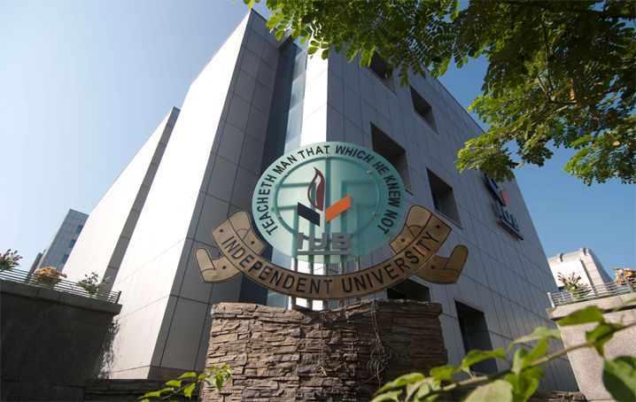

Universities

Independent University Bangladesh
Independent University Bangladesh (IUB) is one of the leading private universities in Bangladesh, offering a wide range of undergraduate and graduate programs.
North South University
North South University (NSU) is the first private university in Bangladesh, known for its academic excellence and diverse student body.

United International University
United International University (UIU) is committed to providing quality education and fostering innovation and research among its students.